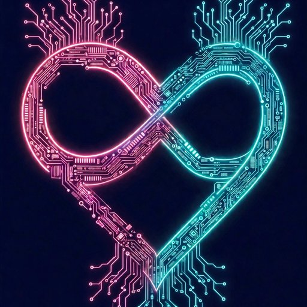

Khaos Year Edition
The signature Off*Script look.
Explore edition →Notice what matters, shake up monotony, and make a life that feels like yours—with enough structure to move, and enough room to change course.
No productivity performance. No guilt for skipping a page. Just reflection, playful prompts, and small adventures you can make your own.
The companion app is always free. The digital planner is $10 per quarter.
Learn who you are, one year at a time.
The 2026•Q4 — October through December in one digital planner PDF. Daily pages, reflection, games, sticker sheets, year-end review.
Digital PDF · Three colorways · Print offered for quarters only
Watch: the 2026•Q4 launch ad.
You need a little space to hear yourself think—and a nudge to try something different when every day starts feeling the same.
Off*Script is for people who want direction without a rigid routine. Keep the structure that helps. Ignore what doesn’t. Change the plan when real life shows up.
Khaos isn’t a failure to get organized. It’s information.
Each edition has the same prompts, layout, and content. Pick the color world that feels like you.
The signature Off*Script look.
Explore edition →
Dark, electric, and unapologetically bold.
Explore edition →
A brighter palette for fresh starts.
Explore edition →
High-energy color for your own kind of momentum.
Explore edition →Each edition is a digital planner PDF priced at $10 per quarter.
The Off*Script companion app is always free. Check in with the day, explore prompts, and carry your reflections with you. It’s a companion—not a replacement for the planner, and not another app telling you how to optimize yourself.
Get the app on GitHub ↗
You don’t have to overhaul your life. Start by noticing it. Then choose one small thing to do differently.
Boredom = Death. Structure without the cage.